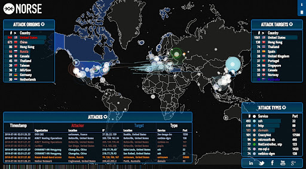

Stuxnet, while extremely effective in delaying Iran's nuclear program for the development of nuclear
weaponry, came at a high cost. For the first time, it became clear that not only could cyber weapons be
defensive but they could be offensive. The large decentralization and scale of cyberspace makes it
extremely difficult to direct from a policy perspective. Non-state actors can play as large a part in
the cyberwar space as state actors, which leads to dangerous, sometimes disastrous, consequences. Small
groups of highly skilled malware developers are able to as effectively impact global politics and cyber
warfare as large governmental agencies. A major aspect of this ability lies in the willingness of these
groups to share their exploits and developments on the web as a form of arms proliferation. This
allows lesser hackers to become more proficient in creating the large scale attacks that once only
a small handful were skillful enough to manage. In addition, thriving black markets for these kinds
of cyber weapons are buying and selling these cyber capabilities.
CYBERWARFARE:
